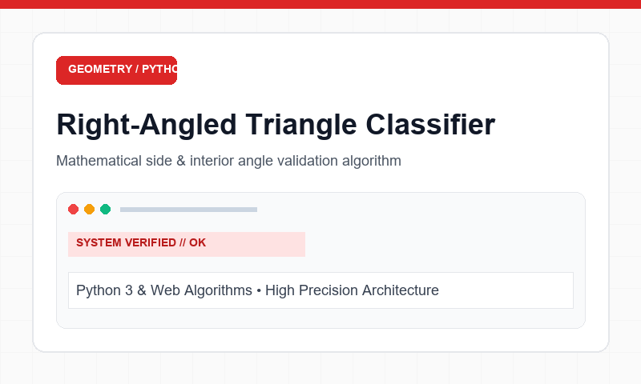

Problem Solving1. Right-Angled Triangle Classifier
A robust geometric analysis application that accepts two interior triangle angles, verifies geometric integrity (angle sum < 180° and positive values), calculates the unknown third angle, and determines whether the triangle forms a right-angled triangle.